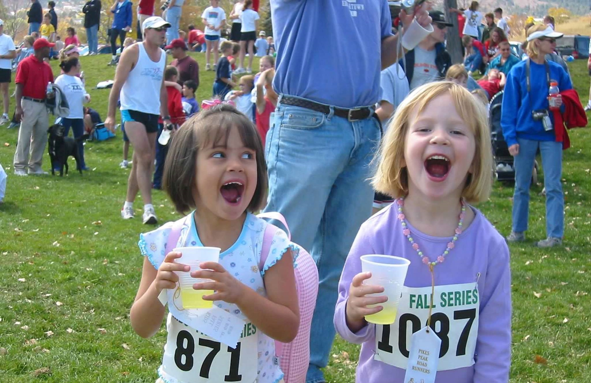
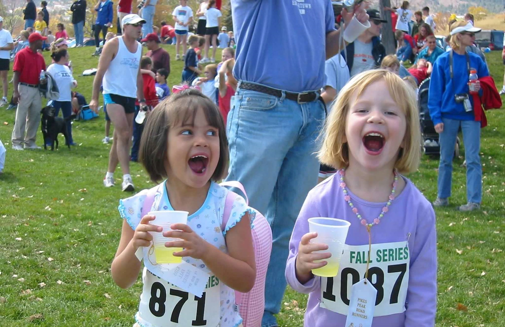

Born and raised in Colorado Springs I have spent a majority of my life outdoors. I fell in love with hiking, skiing, exploring at a young age and that love continues to this day.
I do love indoor activities just as much. I am a seasoned TV show binge watcher. Anything from New Girl to Deadlist Catch to Avatar to Euphoria, I really can never get enough.
Crafting is one of my favorite hobbies. Some of my favorites include: embroidery, painting, felting, and drawing.
 
